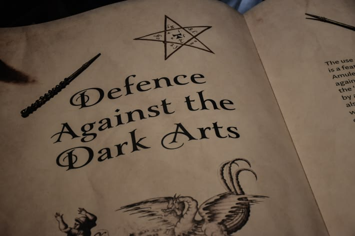

Defence Against the Dark Arts
Tahun Ketiga
Pengantar Kelas oleh Professor Poirot
Selamat datang di kelas Pertahanan Terhadap Ilmu Hitam untuk Tahun Ketiga. Di bawah bimbingan saya, Professor Hercule Poirot, kelas ini akan berjalan sedikit berbeda dari apa yang mungkin Anda bayangkan. Banyak penyihir muda mengira bahwa pertahanan diri adalah soal siapa yang bisa meneriakkan mantra paling keras atau siapa yang memiliki tongkat sihir dengan inti paling agresif. Itu adalah kekeliruan fatal yang sangat berbahaya.
Mata manusia sangat mudah ditipu oleh ilusi, kegelapan, dan rasa takut yang tiba-tiba. Namun, nalar—apa yang suka saya sebut sebagai sel-sel kelabu kecil di dalam kepala Anda—tidak akan pernah membohongi Anda jika dilatih dengan metode ilmiah dan observasi yang teliti. Sebelum Anda merapal satu mantra pun, Anda harus belajar mengamati, menganalisis, dan menyimpulkan hakikat dari ancaman yang ada di hadapan Anda.
Kurikulum 16 materi yang tersusun di dalam buku ini dirancang secara sistematis dari dasar hingga tingkat taktis lanjutan. Kita akan memulainya dari penguasaan spektrum cahaya dan mantra penyingkap, membedah anatomi energi sihir dan bahaya kelelahan magis, hingga menganalisis makhluk-makhluk gelap dari yang berukuran mikro hingga monster hibrida hasil eksperimen ilegal.
Silakan gunakan navigasi menu hamburger di kiri atas untuk membuka halaman materi spesifik, atau langsung memilih kategori materi pembelajaran. Bacalah dengan saksama dan pastikan sel-sel kelabu Anda bekerja aktif sepanjang tahun ajaran ini.
Materi Pembelajaran
Berikut adalah sistem pembelajaran D.A.D.A yang terbagi menjadi dua kategori utama. Silakan pilih salah satu kategori di bawah ini atau gunakan menu navigasi di sebelah kiri untuk langsung mengakses materi spesifik.
Fundamentals of Defence
Pelajari konsep dasar dalam Defence Against the Dark Arts, mulai dari penggunaan cahaya magis hingga pengenalan makhluk dasar.
Advanced Defence & Dark Creatures
Pembelajaran tingkat lanjut mengenai makhluk kegelapan yang kompleks, sinyal magis, serta taktik pertahanan lingkungan.

FOUNDATIONS OF DEFENCE AGAINST THE DARK ARTS
Pertahanan terhadap Ilmu Hitam bermula dari kemampuan memahami sihir, mengenali ancaman, dan mengetahui bagaimana sebuah situasi dapat dikendalikan sebelum berkembang menjadi bahaya. Bagian ini memperkenalkan berbagai konsep dasar dalam Defence Against the Dark Arts, mulai dari penggunaan cahaya dan mantra pengungkap hingga pengenalan terhadap makhluk-makhluk yang dapat ditemukan di lingkungan dunia sihir.
Melalui pembelajaran mengenai berbagai jenis mantra, kelelahan magis, serta karakteristik makhluk seperti Imps, Bowtruckles, Gnomes, Doxies, Gargoyles, Hags, Ghosts, Poltergeists, Gytrashes, Fire Crabs, dan Blast-Ended Skrewts, peserta didik akan membangun dasar pengetahuan yang diperlukan untuk memahami pertahanan secara lebih menyeluruh.
Untuk mengakses materi subpage dalam modul Fundamentals, silakan gunakan menu navigasi di bagian kiri atas.
BEYOND THE FUNDAMENTALS
Setelah memahami dasar-dasar pertahanan, pembelajaran berlanjut kepada ancaman yang lebih kompleks. Bagian ini memperluas pemahaman mengenai makhluk kegelapan, perilaku mereka, berbagai bentuk ancaman, serta cara lingkungan dan keadaan dapat memengaruhi sebuah situasi magis.
Pembahasan mencakup Cornish Pixies, Trolls, Giants, Vampires, Werewolves, Banshees, dan Yetis, sekaligus memperkenalkan penggunaan berbagai mantra dalam menghadapi keadaan tertentu. Perhatian tidak hanya diberikan kepada kekuatan sebuah mantra, tetapi juga kepada alasan penggunaannya, pengendalian situasi, komunikasi melalui sinyal magis, dan kemampuan membaca tanda-tanda sebelum mengambil tindakan.
Pembelajaran kemudian mencapai puncaknya melalui The Dark Creature Incident, sebuah kasus yang menggabungkan pengetahuan mengenai makhluk, lingkungan, mantra, dan pengambilan keputusan dalam satu situasi pertahanan.
Untuk mengakses materi subpage dalam modul Advanced, silakan gunakan menu navigasi di bagian kiri atas.
Judul Materi
Ujian Evaluasi: Fundamentals
Kerjakan ujian ini dengan teliti. Nilai akan langsung keluar setelah selesai.
Akses Ujian Terkunci
Akses ujian dikunci oleh Kementerian Sihir / Professor Poirot.
Ujian Evaluasi: Advanced
Kerjakan ujian ini dengan teliti. Nilai akan langsung keluar setelah selesai.
Akses Ujian Terkunci
Akses ujian dikunci oleh Kementerian Sihir / Professor Poirot.
Access requires clearance.
Kasus ini sedang disegel oleh Kementerian Sihir.